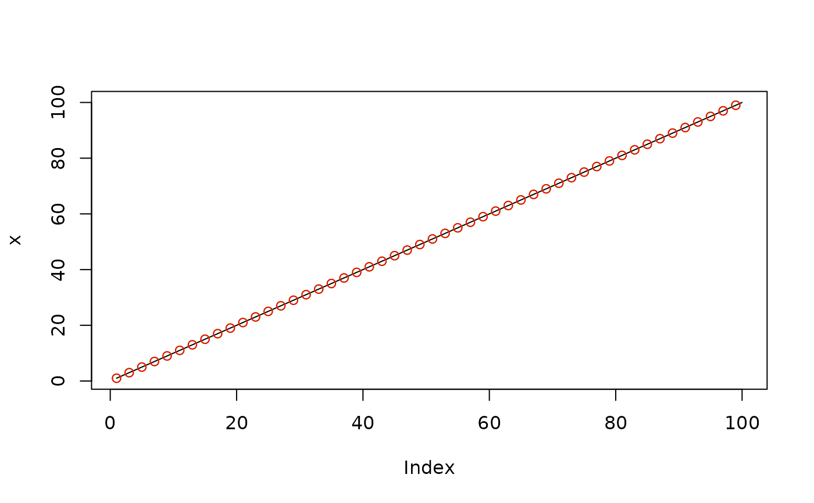

Decimate with 'FIR' or 'IIR' filter
Arguments
- x
signal to be decimated
- q
integer factor to down-sample by
- n
filter order used in the down-sampling; default is
30ifftype='fir', or8ifftype='iir'- ftype
filter type, choices are
'fir'(default) and'iir'
Details
This function is migrated from signal package,
but with bugs fixed on 'FIR' filters. The result agrees with 'Matlab'
decimate function with 'FIR' filters. Under 'IIR'
filters, the function is identical with signal::decimate,
and is slightly different with 'Matlab' version.
Examples
x <- 1:100
y <- decimate(x, 2, ftype = "fir")
y
#> [1] 1 3 5 7 9 11 13 15 17 19 21 23 25 27 29 31 33 35 37 39 41 43 45 47 49
#> [26] 51 53 55 57 59 61 63 65 67 69 71 73 75 77 79 81 83 85 87 89 91 93 95 97 99
# compare with signal package
z <- signal::decimate(x, 2, ftype = "fir")
# Compare decimated results
plot(x, type = 'l')
points(seq(1,100, 2), y, col = "green")
points(seq(1,100, 2), z, col = "red")
